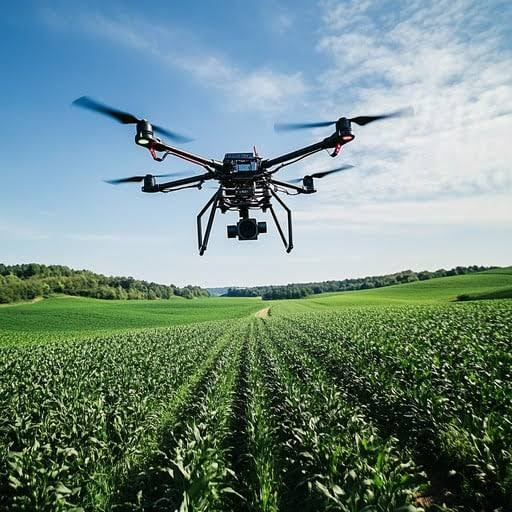
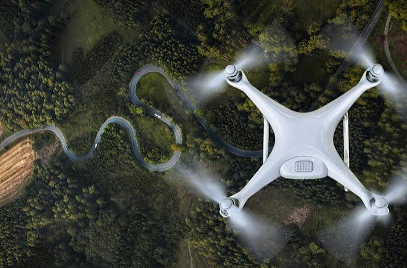
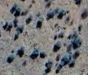
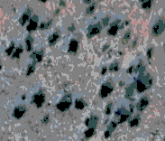
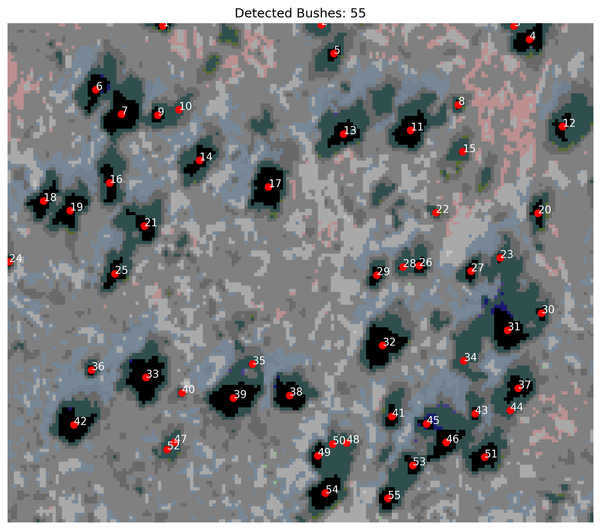
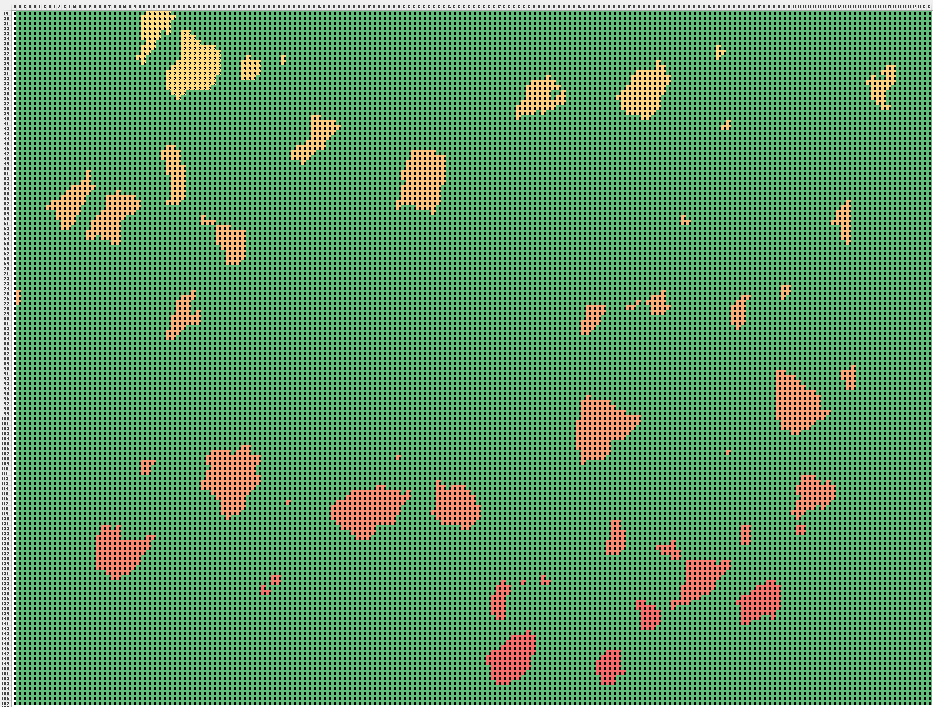

Computer Vision | Python | Image Processing
CV: Savannah Erasmus
A Python application that classifies vegetation pixels, detects individual bushes, and estimates bush density for agricultural monitoring.

Bush counting is used in the agricultural sector to measure crop yields, establish planting rates and managing rangelands where invasive woody vegetation threatens livestock grazing, Counting allows farmers or other agricultural users to track plant health, determine chemical/water requirements and calculate the profitability of their land.
In semi-arid savannas (such as South Africa, Namibia and Botswana), aggresive woody shrubs and trees frequently crowd out the palatable grasses livestock need. Farmers count bushes to evaluate the grass-to-bush ratio. High bush counts decrease grazing capacity and lead to soil degredation. Knowing the exact density and species of encroaching bushes helps farmers apply targeted selective mechanical or chemical control, or utilise prescribed burning. Farmers frequently assess and quantify bush densities to plan lucrative de-bushing projects, which yield products like charcoal, animal fodder or wood chips.
For perennial crops, bush counting is a staple metric for predicting seasonal output. Counting bushes or specific plucking points directly informs overall production forecasts. In tea plantations, for instance, counting tea bushes helps assess planting viability and compares the effectiveness of different agroforestry methods. Modern precision agriculture frequently uses smart drones to conduct automated bush counts and map canopy health.
For direct-sown or seedling-based agriculture, counting is done to evaluate the performance od seeders and overall plant establishment. Early plant counts determine the success rate of germination and identify blockages or malfunctions in the seed drill. It verifies if the field has reached the ideal plant population per square meter needed to maximise yield.
Bush encroachment reduces grazing capacity and makes it difficult for farmers to estimate vegetation density manually.
This project analyses aerial imagery using Python, classifies vegetation pixels based on colour, groups neighbouring pixels into bushes, and estimates the total number of bushes.
Image → Pixel Classification → Bush Detection → Bush Counting → Statistics
The aerial image is transformed through multiple computer vision steps to identify and count individual bushes.



